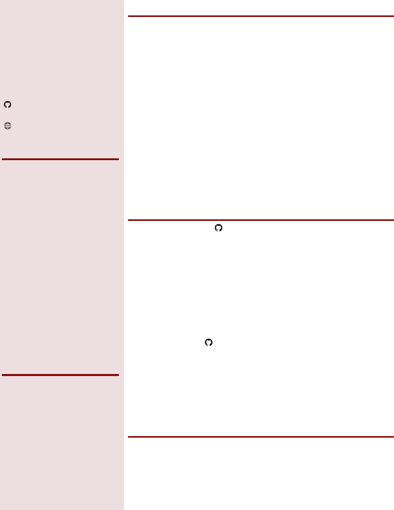

Machine Learning Driven Data Science Intern
Stackup – National University of Singapore/ISS
Jan – April 2017
Assisted in developing Machine Learning Driven Data Science course
Developed ecommerce website for use as case study I n course (see below)
Created Facial recognition program for use as case study (see below)
Modeled new office space on google sketchup
Robotics Team Member
FIRST Robotics – Team 4733
2014 – 2016
Participated in a self-funded, student run team which designed and created
robots from scratch in the FIRST robotics competition, programmed using C++
Designed and prototyped mechanical arm for 2016 stronghold competition
Brought in $500 in sponsorships, including non-monetary resources eg.
mentoring and technological resources
Associate User Experience Architect
Critical Mass
August 2015
Analyzed and designed improvements to the user experience in customer
support centers for GoDaddy, Sunglasses Hut, and AT&T
Ideas then incorporated by company into presentation to clients
Ecommerce Website
Jan – April 2017
Developed MEAN Stack website to be used as base template for machine
learning model (eg. find related product, categorization, etc.)
Heavily modified original template
Changed to using mongoose to connect with MongoDB; increasing
maintainability and simplifying code
Developed schemas to suit case model, such as linking to related product,
thus increasing functionality
Modified front end to increase functionality (see above), and to be more
aesthetically pleasing
Created python web-crawler to get product information from commercial
ecommerce website
Facial Recognition
Jan – April 2017
Identified faces by Principle Component Analysis through using various machine
learning libraries in python such as scikit learn
Achieved maximum precision of 85%
Sandwich Maker
Nov 2017
LegoNXT system programmed using RobotC, with 3 sensors (colour, ultrasonic,
and touch) and a dual direction locking motor system to dispense ingredients
and make a sandwich
2017
(University of Waterloo)
2016
2016
2015
ZENG
1B MECHATRONICS
1B ENGINEERING
✉ zhixuan.zeng@gmail.com
github.com/ezhxzeng
✆ (226)-792-7910
ezhxzeng.github.io/web_portfolio
Skills Summary
Data science programming using
scikit learn, numpy, and pandas
libraries in Python
MEAN stack web development
MongoDB
ExpressJS
Angular
NodeJS
HTML, CSS, Javascript
Git
Proficient in AutoCAD and
Solidworks
Education
Candidate for B.A.Sc.
Mechatronics Engineering
2016 – 2021
Relevant courses include:
Algorithms and Data Structures (MTE140)
Circuits (MTE120)
Engineering Gaphics and Design (MTE100)
Digital Computation (GENE 121)